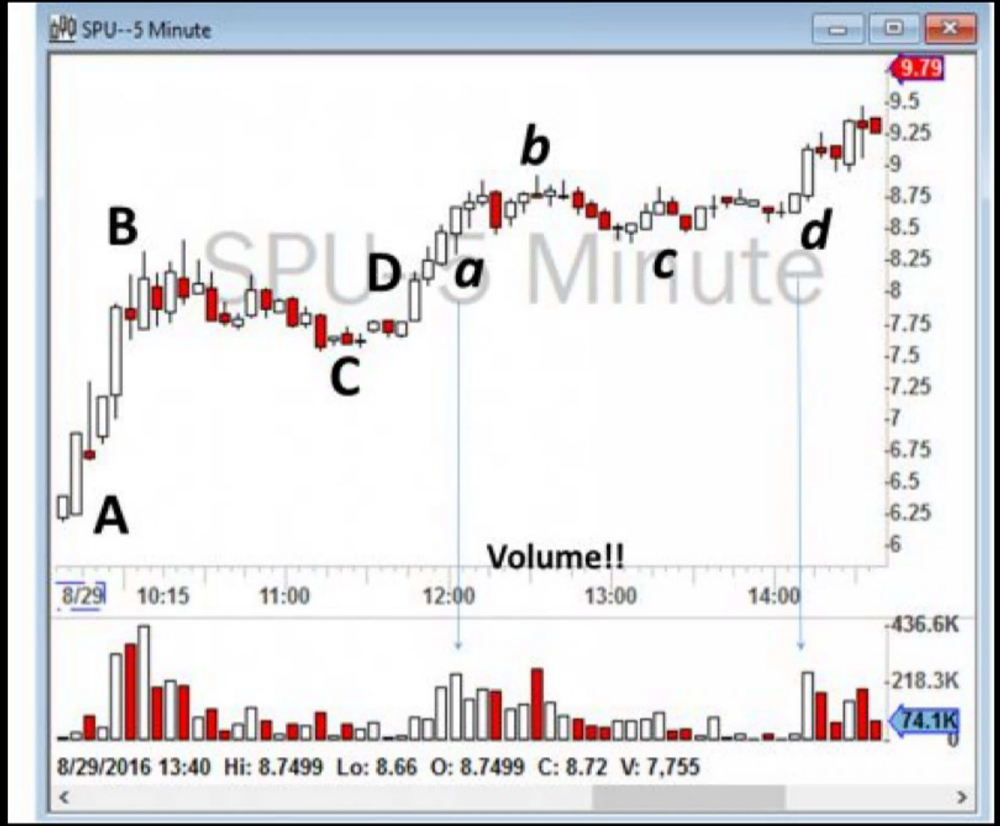
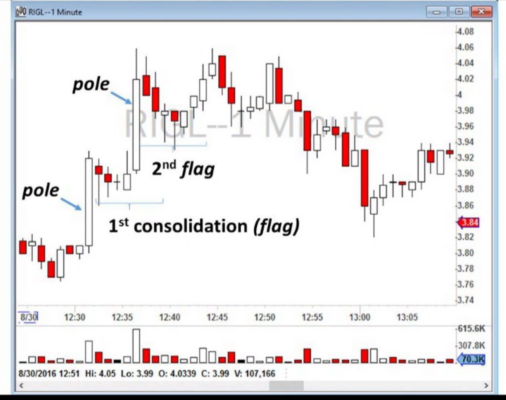
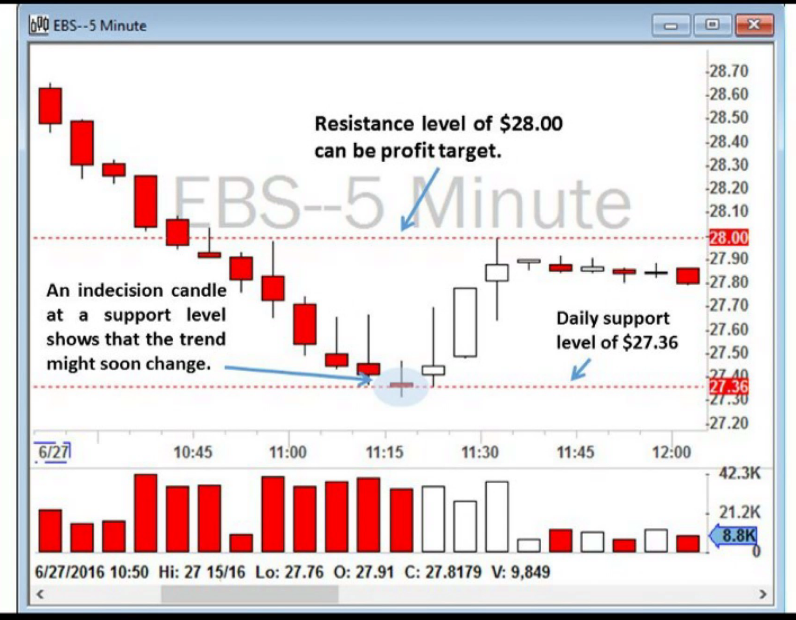
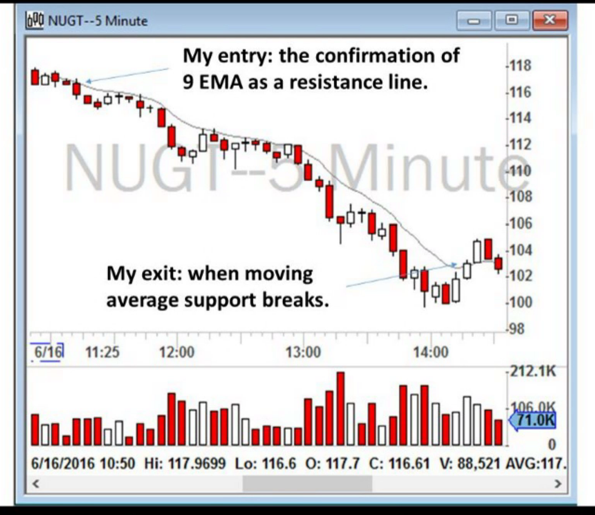
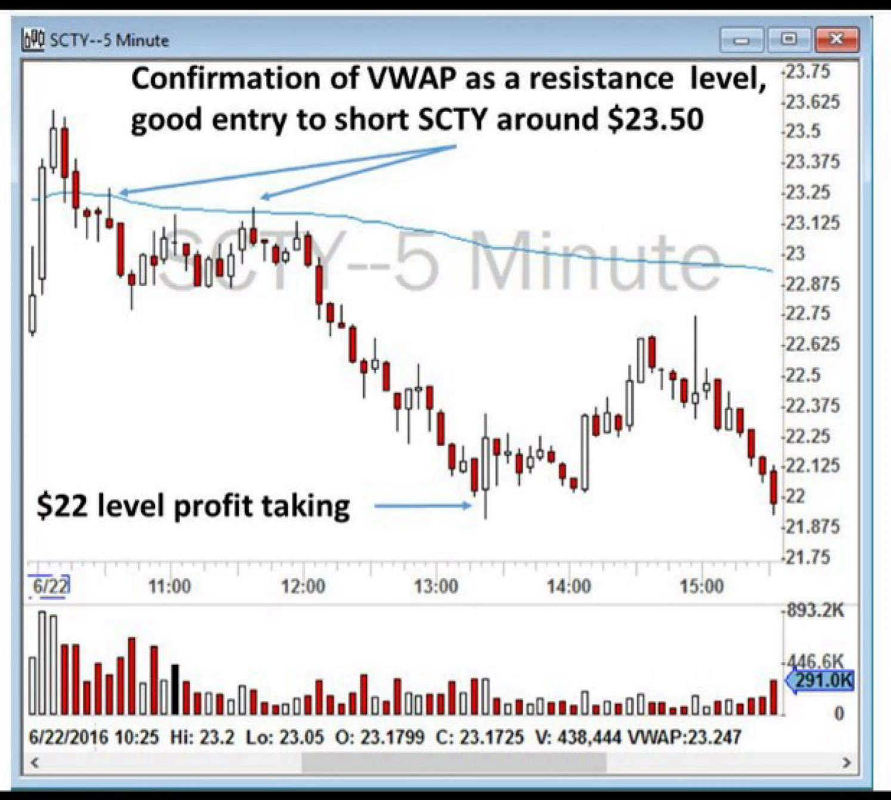
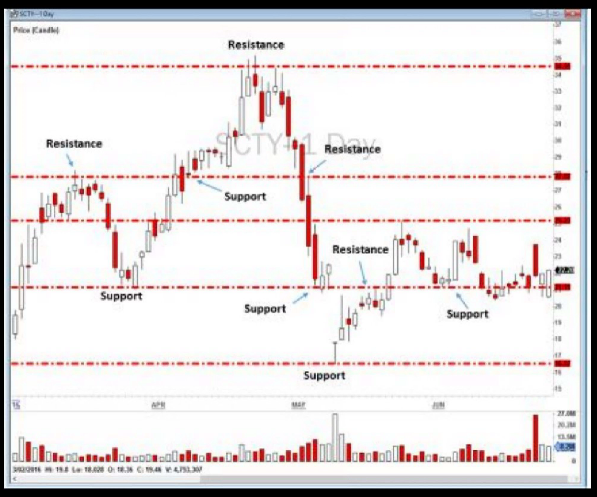
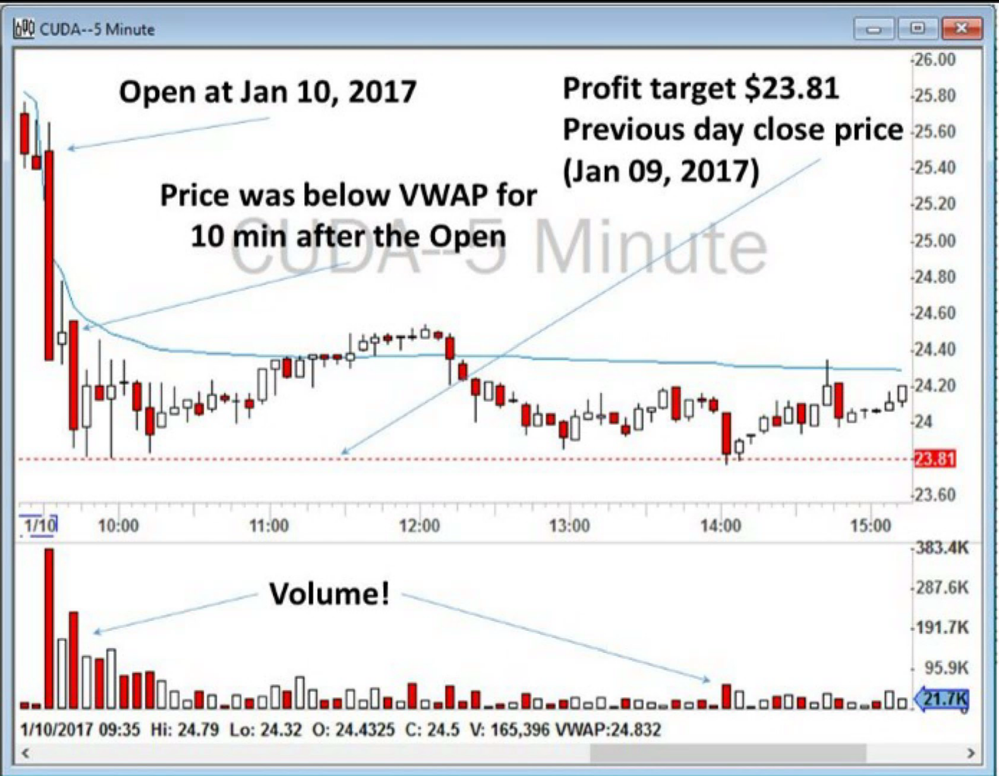
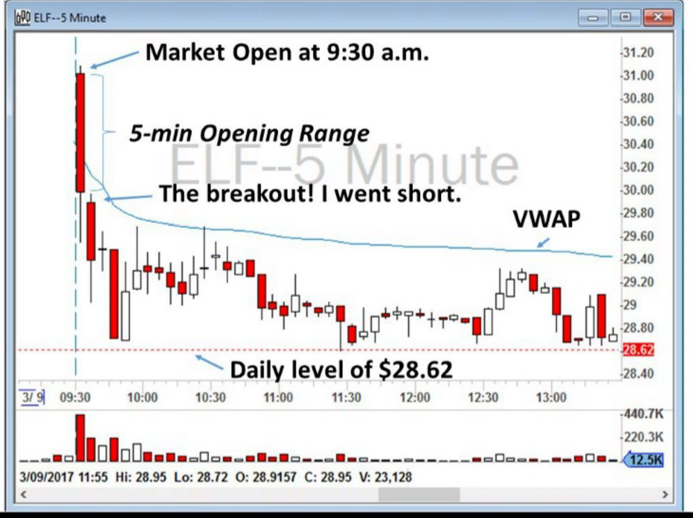

Premarket: 4:00am - Open: 6:30am - Midday: 11:00am - Close: 3:00pm - NYSE Closed: 4:00pm
Day Trading Cheat Sheet
EST
The Strategies
O
Strategy 1: ABCD Pattern
O

Notes:
+Although the ABCD Pattern is simple and has been known for a long time, it still works effectively because so many traders are still trading it. It has a self-fulfilling prophecy effect.
+When the price approaches point B, buyers will jump on massively, and close to point D, the volume will suddenly spike, which means that many more traders are jumping into the trade. These are important signs to watch for.
+Usually, as the trading day progresses, volumes become lower and therefore the second ABCD pattern is smaller in size. Please note that you will always have high volumes at points B and D.
-------------------------------------------------------
To summarize my trading strategy for the ABCD Pattern:
1. When I observe with my scanner or I'm advised by someone in our chatroom that a stock is surging up from point A and reaching a significant new high for the day (point B), I wait to see if the price makes a support higher than point A. I call this point C. I do not jump into the trade right away.
2. I watch the stock during its consolidation period (I'll explain this term in the next strategy). I choose my share size and stop and exit strategy.
3. When I see that the price is holding support at level C, I enter the trade close to the price of point C in anticipation of moving forward to point D or higher.
4. My stop is the loss of point C. If the price goes lower than point C, I sell and accept the loss. Therefore, it is important to buy the stock close to point C to the loss. Some traders wait and buy only at point D to ensure that the ABCD Pattern is really working. In my opinion, that approach basically reduces your reward while at the same time increasing your risk. [My profit target will be when the stock makes a new low on a 5-minute chart, which is a sign of weakness.]
5. If the price moves higher, I sell half of my position at point D, and bring my stop higher to my entry point (break-even).
6. I sell the remaining position as soon as my target hits or I sense that the price is losing steam or that the sellers are acquiring control of the price action. When the price makes a new low on my 5-minute chart, it is a good indicator that the buyers are almost exhausted.
O
Strategy 2: Bull Flag Momentum
O

Notes:
+This trading strategy is difficult to manage the risk in and requires a fast execution platform.
+Wise traders know that it is risky to buy a stock when the price is increasing significantly. That's called “chasing the stock’. Professional traders aim to enter the trade during quiet times and take their profits during the wild times.
+Usually a Bull Flag will show several consolidation periods. I enter in only during the first and second consolidation periods.
+You can see the Bull Flag Pattern on any short time frame: 1-minute, 2-minute and 5-minute charts.
+The volume of shares traded will be significantly higher after consolidation, which is a confirmation for a long entry.
+The Bull Flag is essentially an ABCD Pattern that will happen more often on low float stocks.
+This is a risky strategy and beginners should be very careful trading these.
+You will need a super-fast execution system for scalping like this.
-------------------------------------------------------
To summarize my trading strategy:
1. When I see a stock surging up (either on my scanner or when advised by someone in our chatroom), I patiently wait until the consolidation period. I do not jump into the trade right away (you will recall that is the dangerous act of “chasing the stock").
2. I watch the stock during the consolidation period. I choose my share size and stop and exit strategy.
3. As soon as prices are moving over the high of the consolidation candlesticks, I enter the trade. My stop loss is the break below the consolidation periods.
4. I sell half of my position and take a profit on the way up. I bring my stop loss from the low of the consolidation to my entry price (break-even).
5. I sell my remaining positions as soon as my target hits or I sense that the price is losing steam and the sellers are gaining control of the price action.
O
Strategies 3 and 4: Reversal Trading
O

Notes:
+In reversal trading, it is best that the RSI be at the extremes (above 90, below 10). Once you find that, you must then look for an actual entry near a strong intraday support (for Bottom Reversal) or resistance level (for Top Reversal). As mentioned, an entry for me is going to be either the first 1-minute or the first 5-minute candle to reach a new high (for Bottom Reversal) or to make a new low (for Top Reversal) and only when the price is being traded near an important intraday support or resistance level.
+There are times when I'll use the 1-minute chart, but typically I'll wait for the 5-minute chart because it is a much better confirmation. The 5- minute chart is cleaner.
+In a Bottom Reversal, if the stock pops up and then suddenly moves back down, I stop out for a loss… If I get in and I hold for a few minutes and the price stays flat, I get out, no matter what happens after that. I may be wrong, but I don't like to expose my account to the unknown.
+A stock that has been selling off slowly all day long is usually not suitable for a reversal. That stock may be a good candidate for a Moving Average Trend trade.
When a stock is ripe for reversal trading, there will be a very high volume of shares being traded. Volume will usually increase with the direction of price action and will be at its maximum at the point of reversal.
+Virtually every trading day you will find stocks that are good candidates for reversal trades.
-------------------------------------------------------
To summarize my trading strategy for the Bottom Reversal Strategy:
1 . I set up a scanner to flag stocks with four or more consecutive candlesticks going downward in an extreme manner. When I see a stock hit my scanner, I quickly review the volume and daily levels of support or resistance near the stock to see if it will be a good candidate for a reversal trade or not.
2. I wait for confirmation of a Bottom Reversal Strategy: (1) formation of a bullish Doji or indecision candle or, instead, a very bullish candlestick, (2) the stock is being traded at or near a significant intraday support level, and (3) the RSI must be lower than 10.
3. When I see the stock make a new 1-minute or 5-minute high, I buy the stock.
4. My stop loss is the low of the previous red candlestick (the loss of the support level) or the low of the day.
5. My profit target is either (1) the next level of support, or (2) VWAP (Volume Weighted Average Price, described later in this chapter) or 9 EMA or 20 EMA moving averages (whichever is closer), or (3) the stock makes a new 5-minute low, which means that the buyers are exhausted and the sellers are once again gaining control
-------------------------------------------------------
To summarize my trading strategy for the Top Reversal Strategy:
1. I setup a scanner to highlight stocks with four or more consecutive candlesticks moving upward. When I see the stock hit my scanner, I quickly review the volume and daily level of support or resistance near the stock to see if it will be a good trade or not.
2. I wait for confirmation of a Top Reversal Strategy: (1) formation of a bearish Doji or indecision candle or, instead, a very bearish candlestick, (2) the stock is being traded at or near a significant resistance level at high volume, and (3) the RSI must be higher than 90.
3. When I see the stock make a new 5-minute low, I consider this as a sign of weakness. I start short selling the stock if I have shares available to short.
4. My stop will be the high of the previous candlestick (the loss of the resistance level) or simply the high of the day.
5. My profit target is either (1) the next level of support, or (2) VWAP or 9 EMA or 20 EMA moving averages (whichever is closer), or (3) when the stock makes a new 5-minute high, which means the buyers are once again gaining control and the sellers are exhausted.
O
Strategy 5: Moving Average Trend Trading
O

Notes:
+Many stocks will start an upside or downside trend after the morning session (around 11 a.m. New York time) and you will see their moving averages in 1-minute and 5- minute charts as a type of moving support or resistance line.
+I monitor prices on both 1-minute and 5-minute charts and make my trades based only on these two time frames.
+In three areas marked on the chart, the price broke the 9 EMA and went slightly higher, but a 5-minute candlestick did not actually close above 9 EMA These false breakouts usually happen with low volume. Experienced traders wait for a 5-minute candlestick to “close" above 9 EMA before they get out. A sudden break of 9 EMA with low volume may not be a good indicator of a trend coming to an end.
+In a trend trade strategy, you are usually left exposed in the market for a considerable length of time. Some trend trades can last as long as several hours.
+These strategies usually best work during Mid-day and the Close.
+Having said that, a Moving Average Trend Strategy is an excellent trading strategy, because it usually does not require a very fast decision making process and trade execution.
-------------------------------------------------------
To summarize my trading strategy for Moving Average Trend trading:
1. When I am monitoring a stock in Play and notice a trend is establishing around a moving average (usually 9 EMA), I consider trend trading. I quickly look at the previous days’ trading data (on a 1-minute or 5-minute chart) to see if the stock is responding to these moving averages.
2. Once I learn which moving average is more suitable to the behavior of the trade, I buy the stock after confirmation of moving averages as a support, and I buy as close as possible to the moving average line (in order to have a small stop). My stop will usually be S to 10 cents below the moving average line or, if a candlestick, close below the moving average (for long positions). For short positions, a close above moving average would stop me out.
3. I ride the trend until the break of moving average.
4. I never use trailing stops and constantly monitor the trend with my eyes.
5. If the stock is moving really high away from the moving average, offering me an equally really nice unrealized profit, I may take some profit, usually at half- position. I do not always wait until the break of moving average for my exit. Traders say: you can never go broke by taking good profits. If the price pulls back to the moving average, I may add again to my position and continue the trend trade.
O
Strategy 6: VWAP Trading
O

Notes:
+VWAP is an indicator of who is in control of the price action - the buyers or the sellers. When stock is traded above the VWAP, it means that the buyers are in overall control of the price and there is a buying demand on the stock. When a stock price breaks below the VWAP, it is safe to assume that the sellers are gaining control over the price action.
+After volatility decreases around ten to fifteen minutes into the Open, the stock will move toward or away from the VWAP. This is a test to see if there is a large investment bank waiting to buy or sell.
+Trading based on VWAP can be very easy for beginner traders to master because so many traders study the VWAP and make decisions based on it. Therefore, a beginner trader can easily be on the right side of the trade.
+Half-dollars (such as $1.50, $2.50, $3.50) and whole dollars ($1, $2, $3) usually act at a support or resistance level.
-------------------------------------------------------
To summarize my trading strategy for VWAP trading:
1. When I make my watchlist for the day, I monitor the price action around VWAP at the Open. If a stock shows respect toward VWAP, then I wait until a confirmation of the VWAP break (for short selling) or VWAP support (for going long). (This means that the author watches the price action to see that VWAP is actually acting as a support or resistance level.)
2. I usually buy as close as possible to VWAP to minimize my risk. My stop will be a break and a close 5-minute close below VWAP. For short selling, I short near VWAP with a stop loss of a close above the VWAP.
3. I keep the trade until I hit my profit target or until I reach a new support or resistance level.
4. I usually sell half-positions near the profit target or support or resistance level and move my stop up to my entry point or break-even.
O
Strategy 7: Support or Resistance Trading
O

Notes:
+The market doesn't know diagonal price levels. Diagonal trend lines are subjective, and can result from wishful thinking. Horizontal support or resistance are not. The market only remembers price levels.
+Support is a price level where buying is strong enough to interrupt or reverse a downtrend. Resistance is a price level where selling is strong enough to interrupt or reverse an uptrend. Minor support or resistance causes trends to pause, while major support or resistance causes them to reverse. Traders buy at support and sell at resistance, making their effectiveness a self-fulfilling prophecy.
+Support or resistance lines on daily charts are not always easy to find, and at times you will not be able to draw anything clear. If I cannot see anything clear, I don't have to draw anything. There is a good chance that other traders will also not see those lines clearly and therefore there is no point in forcing myself to draw support or resistance lines. In that case, I will plan my trades based on the VWAP or Moving Averages or other chart patterns that I earlier discussed.
+After reviewing the daily charts up to June 20, 2016, I found four levels of $47.93, $48.42, $48.67, and $49.15. As you can see in Figure 7.25 above, all of these levels are extreme price levels for the previous days and, as I explained, I give more attention to wicks and extreme prices than I do to the open or close prices.
+I marked the areas that those levels acted as a support or resistance leveL Do ensure that you give special attention to the volume of shares traded at or near those levels. Do you see that they are significantly higher near those levels? A high volume confirms that these levels are significant and day traders should pay attention to them.
-------------------------------------------------------
To summarize my trading strategy for support or resistance trading:
1. Each morning, after I make my watchlist for the day, I quickly look at the daily charts for that watchlist and find the areas of support or resistance that have been shown in the past to be critical.
2. I monitor the price action around those areas on a 5-minute chart. If an indecision candle forms around that area, that is the continuation of that level and I enter the trade. I usually buy as close as possible to the support level to my risk. Stop will be a break and a close of a 5-minute candlestick under the support level.
3. I will take profit near the next support or resistance level.
4. I keep the trade open until I hit my profit target or I reach a new support or resistance level.
5. I usually sell half-positions near the profit target or support or resistance level and move my stop up to my entry point for break-even.
6. If there are no next obvious support or resistance levels, I will consider closing my trade at or near half-dollar or round-dollar levels.
A similar approach will also work when you sell short a stock below a resistance level.
O
Strategy 8: Red-to-Green Trading
O

Notes:
+The previous day close is a powerful level of support or resistance and traders should trade toward it when there is rising volume.
+If the current price of a stock is higher than the previous day close (for Stocks in Play that gapped up), the market is moving from a Green day to a Red day (meaning that the percentage that the price has changed will now be negative, which will be shown as red in most of the Exchanges and platforms). This is a Green-to-Red move.
+If the price is lower than the previous day close (for stocks that gapped down), the market is moving from a Red day to a Green day (meaning that the percentage that the price has changed will now be positive, which will be shown as green in most of the Exchanges and platforms). This is a Red-to-Green move.
+In this example too, the previous day close level of $23.81 acted as a strong support level
-------------------------------------------------------
To summarize my trading strategy for Red-to-Green trading:
1. When I make my watchlist for the day, I monitor the price action around the previous day close.
2. If a stock moves toward the previous day close with high volume, I consider going long with the profit target of the previous day close.
3. My stop loss is the nearest technical level. If I buy near VWAP, my stop loss will be the break of VWAP. If I buy near a moving average or an important support level, my stop loss will be the break of moving average or support level.
4. I usually sell all at the profit target. If the price moves in my favor, I bring my stop loss to the break-even and do not let the price turn against me. Red-to-Green moves should work immediately.
A similar approach will work equally as well when you short a stock for a Green-to-Red Strategy
O
Strategy 9: Opening Range Breakouts
O

Notes:
+This strategy signals an entry point, but does not determine the profit target. You should define the best profit target based on the other technical levels you learn from this book.
+This heavy trading in the first five minutes is the result of the profit or loss taking of the overnight position holders as well as new investors and traders. If a stock has gapped up, some overnight traders start selling their position for a profit. At the same time, some new investors might jump in to buy the stock before the price goes higher. If a stock gaps down, on the other hand, some investors might panic and dump their shares right at the Open before it drops any lower. On the other side, some institutions might think this drop could be a good buying opportunity and they will start buying large positions at a discounted price. Therefore, there is a complicated mass psychology unfolding at the Open for the Stocks in Play.
+Typically, you want to give the opening range at least five minutes. This is called the 5-minute Opening Range Breakout (ORB). Some traders will wait even longer, such as for thirty minutes or even for one hour, to identify the balance of the power between the buyers and sellers. They then develop a trade plan in the direction of the 30-minute or 60-minute breakout. In the past, I only traded the trade at the 5-minute ORB, but recently I am more in favor of the 15-minute ORB or the 30-minute ORB. The longer the time frame, the less volatility you can expect compared to the 5-minute range. As with most setups, the ORB Strategy tends to work best with mid to large cap stocks, which do not show wild price swings intraday. I do not recommend trading this strategy with low float stocks that have gapped up or down. Ideally, the stock should trade within a range which is smaller than the Average True Range of the stock (ATR). The upper and lower boundaries of the range can be identified by the high and low of the 5-, 15-, 30- or 60-minute candlesticks.
+If there was no obvious technical level for the exit and profit target, you can exit when a stock shows signs of weakness. For example, if its price makes a new 5-minute low, that means weakness, and you should consider selling if you are long. If you are short and if the stock makes a new 5-minute high, then it could be a sign of strength and you may want to cover your short position.
-------------------------------------------------------
To summarize my Opening Range Breakout Strategy:
1. After I build my watchlist in the morning, I closely monitor the shortlisted stocks in the first five minutes. I identify their opening range and their price action. How many shares are being traded? Is the stock jumping up and down or does it have a directional upward or downward movement? Is it high volume with large orders only, or are there many orders going through? I prefer stocks that have high volume, but also with numerous different orders being traded. A stock that has traded 1 million shares, but those shares were only ten orders of 100,000 shares each, is not a liquid stock to trade. Volume alone does not show the liquidity; the number of orders being sent to the Exchange is as important.
2. The opening range must be significantly smaller than the stock's Average True Range (ATR). I have ATR as a column in my Trade Ideas scanner.
3. After the close of the first five minutes of trading, the stock may continue to be traded in that opening range in the next five minutes. But, if I see the stock is breaking the opening range, I enter the trade according to the direction of the breakout: long for an upward breakout and short for a downward move.
4. My stop loss is a close below VWAP for the long positions and a break above VWAP for the short positions.
5. My profit target is the next important technical level, such as: (1) important intraday daily levels that I identify in the pre-market, (2) moving averages on a daily chart, and/ or (3) previous clay close.
6. If there was no obvious technical level for the exit and profit target, I exit when a stock shows signs. of weakness (if I am long) or strength (if I am short). For example, if the price makes a new 5-minute low, that means weakness and I consider selling my position if I am long. If I am short and the stock makes a new 5-minute high, then it could be a sign of s1Iength and I consider covering my short position.
My strategy above was for a 5-minute ORB, but the same process will also work well for 15-minute or 30-minute opening range breakouts.
O
O
----------------
The best strategies for each period:
Open - Bull Flag Momentum, VWAP
Midday - Reversal, VWAP, Moving Average, S&R
Close - VWAP, S&R, Moving Average
----------------
Trade Management
O
How Should I Do It?
What’s the best way to do trade management? I trust the author of the book How to Day Trade for a Living, and I want to emulate his example. Note that the strategies outlined in the book already have trade management built into them, and you should look there first before using the following information to determine your trade management procedure. But in case you do want more information about the authors thought process, here are the rules the author has claimed elsewhere in the book that he follows:
If the stock costs $10 to $50:
+Buy 400 shares.
+Confirm that the price action is going your way and buy 400 more shares.
+When you hit your first profit target, sell 400 shares, bringing your stop loss to break even with your entry point.
+At the next target point, sell another 200 shares.
+Finally keep the last 200 shares until you get stopped out, because you never know, the price action may keep going in your favor.
For a more expensive price range ($50-$100) follow the same pattern, but your total share size will be 400, not 800 shares (meaning that everything is reduced by half). You should rarely trade stocks higher than $100. The more expensive stocks are often dominated by institutional traders.
Of course, you can buy however many shares work for you according to how much money you have in your account, the numbers 400 and 800 just happen to work for the author.
O
Buying and Selling
O
+Beware of trading at midday, because of a lack of volume and liquidity in the market. The market has most liquidity and volume during the open, from 9:30 am to 11:30am New York Time. Liquidity means you can get in and out of trades without slippage.
+On Leverage: "Most day traders, including me, use a buying power of around $100,000. You'll remember that your 'buying power' consists of your capital plus the leverage offered from your broker. As I mentioned above, my broker, interactive brokers, offers me a 1:4 margin. While leverage enhances returns, it also enhances losses. "
+"Whenever the market is open there are always two prices for any trading stock - a bid and an ask. A bid is what people are offering to pay for that stock at that moment; an ask is what sellers are demanding in order to sell it. A bid is always lower, an ask is always higher, and the difference is called the bid ask spread… Spreads are higher in lower volume traded stocks, as the market makers who dominate such stocks demand higher fees from those who want to join their party. The bid ask spreads are likely to be small, perhaps only one cent on a quiet day in an actively traded stock. They grow wider as prices accelerate on the way up or down and may become huge - I have seen up to 2 dollars - after a severe drop or a very sharp rally."
+"Market orders - "buy me at any price now!" "Sell me a any price now!" When you use market orders, you are telling your broker to immediately buy or sell the stock for you a any cost. If you place a market order, it will be filled at the current price, whatever that happens to be. A limit order, on the other hand, allows you to specify the maximum or minimum price you will accept. In market orders, essentially, you are getting filled at the bad side of bid ask spreads. A market order buys at the ask (high side) and sells at the bid (low side). The problem with using market orders is that the market can quickly change, and so then does the bid ask spread, and thus you may get your order filled at a very bad price. For example if the bid ask spread is 10.95-10.97, market orders should buy immediately at 10.97 for you, right? When your orders come to the exchange, the market can quickly change to 11.10- 11.15, and therefore your buy market order will be filled at 11.15. That is a 15 cent slippage. And that is really bad. Market makers and many professional traders make a good living from filling market orders. I discourage traders from placing market orders at any time. A market order is like a blank check. Most of the time a market order will be filled very closely to the quoted bid or ask price, but sometimes you will get a nasty surprise."
+"limit orders- "buy me at this price only, not higher!" "Sell me at this price only, not lower!". A limit order, in contrast to a market order, limits the price you are willing to pay for the stock. You specify the number of shares you want to buy and the price you are willing to pay. For example, in the level 2 screenshot below, marked as figure 5.3 you will see I have two limit orders. I asked my broker to buy me 100 shares of TEVA at 34.75, and another 100 shares at 34.74. You'll recall from before, ""SIZE" is the number of lots of shares, with 1 standard lot equaling 100 shares. As you can see, my orders are now sitting in level 2, waiting to get filled. There is no guarantee that I will get filled at those prices. If the price moves higher, I will never get filled and my order will stay in the level 2 until the price moves back down. Sometimes the order will come back partially filled because the price of the stock moved up too quickly. Swing traders commonly use limit orders.
+"marketable limit orders - "buy me now, but up to this price, not higher!" "Sell me now, but down to this price, not lower!" Thirdly, the most important type of order for day traders is a marketable limit order. Marketable limit orders, once sent, will immediately give you as many shares as possible within the price range you have set. In marketable limit orders, you ask your broker to buy or sell stock for you immediately, but you specify the highest price you are willing to pay. For example, in the above figure 5.3, the Level 2 for TEVA, you can ask your broker to buy 100 shares at “ask price + 5 cents". Your broker will go to the ask and try to fill your order. As you can see in the top three highlighted rows on the right-hand side of figure 5.3, there are currently 1,100 shares offered at ask ([4+4+3 = 11] X 100). Therefore, you should get filled immediately (like a market order). But, if the ask price moves up quickly before you get filled, you have already authorized your broker to buy TEVA for you at a higher price as well, up to $34.82 (ask of $34.77+ 5 cents). Therefore, your broker will try to buy 100 shares of TEVA for you at a cost of no more than $34.82. A similar example is also true for selling or short selling on the bid. In selling on the bid, you specify the range you are willing to sell at. For example, if you ask your broker to sell at "the bid – 5 cents", it means that you are not willing to sell at a price lower than the bid minus 5 cents. cents" and sell at the “bid-5 cents"."
+"For a long position (you'll recall “buying long" means you buy shares at one price and hope to sell them at a higher price), my buy orders are in blocks of 400, 200 and 100 shares. I use a marketable limit order to buy at the ask price + 5 cents. My "sell" Hotkeys are marketable limit orders to sell my half or full positions on the bid price - 5 cents. When selling, I will accept the bid price and a price no more than 5 cents lower, to ensure my order gets filled immediately. The DAS platform will automatically calculate what half of my position equals in number of shares. The computer will also calculate the current bid and ask prices and place my order at the price I specify. Similarly, for short positions (you'll recall "short" is when you borrow shares from your broker, sell them, and hope to later buy back the shares at a lower price for return to your broker), I short sell on the bid price or on a price no more than 5 cents lower. My "buy to cover shorts" Hotkeys are marketable limit orders to buy my half or full positions on the ask price + S cents. I am willing to pay higher prices (up to S cents) to asks, just to get my orders filled immediately."
+"Short Selling Restriction (SSR) mode. An SSR is triggered when a stock is down 10% or more from the previous day's close. In that case, regulators and the Exchanges restrict short selling of the stock when its price is dropping. You can only sell short on the ask, you cannot sell short directly to the buyers (on the bid). It means that the priority for selling is for the sellers who currently hold positions, not for the short sellers who are wanting to profit from the downward movement. If you want to sell short, you have to queue up on the ask side and wait for buyers to come to you. Real sellers, on the other hand, can accept bids, from buyers and get rid of their positions."
+"The SSR is designed to give the real sellers, who own the stock, a priority to sell over the short sellers on the market. Therefore, when a stock is in SSR mode, I send my orders to sell on the ask, and then I must wait until my orders get filled. I cannot use a marketable limit order for short selling when a stock has a short selling restriction placed on it."
O
Trade Planning
O
Creating A Trade Plan
+"For every trade, you must ask yourself some questions: Does this fit into my trading personality and my risk tolerance? What strategy will this fit into? If this trade goes the wrong way, where is my stop? How much money am I risking in the trade, and what is the reward potential? This is what many traders find difficult. All of these decisions, the very process of ensuring these decisions fit into your risk tolerance and your strategy parameters, are a tough multitasking call. Not only is it multitasking, but it is multitasking while under stress."
+"You need to make a plan for each trade as early as when you are doing your pre-market scanning. Before making a trade, you must create a plan for your trades or a series of “if/then’ statements. Develop some plans as to when you might take a position in one of your stocks on your watchlist. If you see the x scenario, then you will buy at this price. Continue creating "if-then" scenarios for each outcome."
+"For an example, let's take a look at figures 9.1 and 9.2. Imagine you plan to trade DICK’S Sporting Goods, Inc. (ticker: DKS) on March 7, 2017. The stock had gapped down because of disappointing earnings reports and was being traded at around $50.50 at the pre-market. You think it might be a Stock in Play. Consider the different ways the stocks you have picked might trade and develop a series of if-then scenarios such as I’ve marked on figure 9.2 below:
If the price cannot push higher than VWAP in the first fifteen minutes of the market Open, then I will go short until the previous day close of $48.10.
//
If the price does sell off to the previous day close of $48.10, then I will go long and ride the reversal to the VWAP.
//
If the price pushes over VWAP with high volume, then I will go long and ride the momentum to sell at the next resistance level of $5 3.25.
//
If the price breaks over the daily level of $53.25, then I will go long again until the daily level of $55.50 (which is not shown on the above figure 9.2).
//
On the other hand, if the price goes to $53.25, and that level acts as a strong resistance, then I will go short with the stock until it goes back down to VWAP.
//
You can write down your statements at the beginning of your trading career to make sure you stick to them, but after a few months of simulated trading you will learn how to quickly develop and review these statements in your mind. That is one of the most important outcomes of trading in a simulator: to practice and master if-then scenarios for your strategies and to process that information quickly. That is why three to six months of live simulated trading is essential as you begin your day trading career. As intraday traders, we develop theories daily. In case you are wondering about DKS in the above example, it actually opened weak (below VWAP) and it was a good short trade toward the previous day close of $48.10 as you can see in figure 9.3 below. I then caught a smaller bounce from the previous day close to the VWAP with a long position."
About Trade Plans in General
During the fifteen minutes prior to opening, I watch the tickers on my watchlist and develop trade plans for them based on the price action I am seeing. This is the most difficult part, and it requires experience, knowledge and education. Many traders fail at this step. When the bell rings at 6:30 a.m. (9:30 a.m. New York time), I'll have my plans in place, written on note cards because it is too easy to forget what I've seen on each ticker coming into the Open. What is my plan if it sets up to the long side? What's my plan if it sets up to the short side? What setup do I want to see? “What are my profit targets? Where will my stop be? Is the profit window large enough for the trade to make sense? Just asking yourself questions like these when you are planning your trades will give you a significant advantage because you can then go in with a battle plan and stick to it. If it is written down close to my face I can easily refer to it, and that eliminates the anxiety that I used to feel when the opening bell rang. All I am doing at the opening is looking for my signal and trigger to enter the trade.
I have my profit targets written out on my trade plan, as well as the technical level that I am basing my stops on, so after entry I am just concentrating on hitting my marks and booking profit. There are some that say that knowing when to exit is the hardest part of the trade. It can be extremely tough not to exit the trade too early if you do not have a pre-set plan. If you have a plan ahead of time and you stick to it, you will have a much better chance of letting your winning trades work and cutting your losses off quickly instead of the other way around. This will also help with managing your emotions while in the trade… Once the trade is done, I will reflect on how well my plan worked and how well I stuck to what I had written.
Miscellaneous
I have my profit targets written out on my trade plan, as well as the technical level that I am basing my stops on, so after entry I am just concentrating on hitting my marks and booking profit.
+"Once you have a simulated account, you will need to develop your strategy. Try the strategies that I have discussed in this book, and master one or two of them that fit with your personality, available time, and trading platform. There is no best strategy among them, just like there is no best automobile in the market. There might, however, be a best car for you. The VWAP, Support or Resistance, and the Opening Range Breakout Strategies are the easiest and my favorites. You need to only master a few of them to always be profitable in the market. Keep your strategy simple. When you have a solid strategy that you've mastered, make sure there is no emotion attached to it. Keep practicing it, and then start practicing a second strategy, and learn to incrementally add size in those strategies. Practice with the amounts of money that you will be trading in real life."
+"A good training program will only encourage you to trade the easiest setups when you start. For example, for the first month live, new traders should only trade Support or Resistance or VWAP trades. The next month, new traders can shift to reversal trades exclusively. The next month, you should focus on Moving Average Trend trades. After that, you can focus on Bull Flag Momentum plays (momentum trades are the hardest to execute and manage risk in). But you should start with one trade play at a time."
O
Market Evaluation (Understanding the Different Time Periods and bear or bullishness)
O
Abstract
"I categorize day trading sessions based upon the time of day: the Open, Mid-day, and the Close. Each time period should be treated differently, and you have to be careful because not all strategies are effective in every time period. Good traders make note of what time of day their most profitable trades occur and adjust their trading and strategies to fit such times.
"Many traders lose during the day what they have profited in the Open. Don't be one of them. I created a rule for myself. I am not allowed to lose more than 30% of what I have made in the Open during Mid-day and the Close. If I lose more than the allowed 30%, then I either stop trading or start trading in a simulator."
Pre-Market
“I avoid pre-market trading because there is very low liquidity as there are very few traders trading”
Open
From when the market opens at 9:30 am until around 11:30 am New York time, is when the market will have the most trading volume and also the most volatility. This is the best time to trade and to especially focus on momentum trading (which will be explained later). The advantage of having all of that volume is that it provides liquidity. This means there are plenty of buyers and plenty of sellers, which in turn means that you can easily get in and out of trades.
“I personally trade only within the first one or two hours of the markets opening. If you join the chatroom that I previously mentioned, you will see that I rarely make any trades after 11:30 am New York time.”
In day trading, the market can move very fast, especially at the market Open. The volatility of the market, especially at the Open, can allow for huge profits if you can trade properly, but it can also result in significant losses if you fail to act quickly. Stocks can very quickly hit your entry or exit price, often in a matter of mere seconds.
The Open tends to last about 1.5 hours (9:30 to 11 a.m. New York time). I trade with the most size, and most frequency, during the Open, which statistically is my most profitable time period As such, I increase my size during this time and make more trades. Bull Flag Momentum and VWAP trades tend to be the best strategies for the Open."
Midday
Around midday, you can have good trading patterns, but you wont have the volume. This means a lack of liquidity, meaning that it can be tough to exit the trade and you might get caught in a trade, unable to exit it when you want to, and you could lose a lot of money through slippage.
"During the Mid-day (11 a.m. to 3 p.m.) the market is slower. This is the most dangerous time of the day. There is less volume and liquidity. A small order can cause a stock to move much more than you would anticipate. Strange and unexpected moves will stop you out more frequently during the Mid-day. A review of my trades indicates that I do the worst during the Mid-day. Accordingly, should l decide to trade during the Mid-day, I lower my share size and keep my stops tight. I only make trades that offer the very best risk/reward during this period. New traders tend to overtrade at Mid-day. At times good trading, and smart trading, is to not be trading at all. It is best to gather information during the Mid-day in preparation for the Close. Watch the stocks, prepare for the Close, and be very, very careful with any trading you do. Reversal, VWAP, Moving Average, and Support or Resistance trades tend to be the best strategies for the Mid-day. I never trade Bull Flag Momentum in Mid-day or at the Close."
Close
Never trade Bull Flag Momentum at the Close.
“Into the Close (3 to 4 p.m.), stocks are more directional, so I stick with those that are trending up or down in the last hour of the trading day. I raise my tier size from the Mid-day, but not as high as it is at the Open. The daily closing prices tend to reflect the opinion of Wall Street traders on the value of stocks. They watch the markets throughout the day and tend to dominate the last hour of trading. Many of the market professionals take profits at that time to avoid carrying trades overnight. If the stock is moving higher in the last hour, it means the professionals are probably bullish on that stock. If the stock is moving lower in the last hour, the market professionals are probably bearish. It is thus a good idea to trade with the professionals and not against them. VWAP, Support or Resistance, and Moving Average trades tend to be the best strategies for the Close."
Reading General Bearishness or Bullishness of the Market
How do you recognize the behavior of the market? Index funds such as the Dow Jones Industrial Average (DIJA) or the S&P 500 (SPY) are usually good indicators of what the overall market is doing. If the Dow Jones or the SPY are red, it means that the overall market is weak. If the Dow Jones or the SPY are strong, then the overall market will be going higher.
O
Stock Evaluation (Recognizing TA Setups, Analyzing the Balance of Power Between Bulls and Bears, Passive Monitoring, Knowing When to Jump In)
O
Misc:
+Stock evaluation is more than just constantly making moves, that a big part of it is waiting and watching. Successful traders are patient and resist the temptation to be involved in every move. Traders need to wait for opportunities where they feel comfortable and confident."
Analyzing the Balance of Power Between Bulls and Bears:
O
+Vwap is an indicator of who is in control of the price action - the buyers or the sellers. When stock is traded above the vwap, it means that the buyers are in overall control of the price and there is buying demand on the stock. When a stock price breaks below the vwap, it is safe to assume that the sellers are gaining control over the price action"
+When a trend is coming to an end, usually indecision candles, such as a spinning top or Doji, form. That is when you need to be ready.
+A Doji is a candle that has a wick longer than its body.
+At times, a reversal happens so fast that indecision candlesticks will not form. Therefore, it is important to observe the price action near significant intraday levels, and to of course confirm the reversal with an indication of higher than usual trading volume.
+You can see a picture of a bearish Doji in Figure 7.9 below. It has that long upper wick that some would call a top tail and that others would call a shooting star. This candle tells you four things: the open price, the close price, the high of that period and the low of that period. So, when you have a candle with a top tail, you know that at some point during that candle period the price moved up, was unable to hold at that level, and was then sold off. It depicts a bit of a battle taking place between the buyers and the sellers in which the buyers lost their push up. It is a good indication that the sellers may soon control the price and will push that price down.
+When you have a hammer candle with a bottom tail, you know that at some point during that candle period the price moved down, was unable to hold at those low levels, and was bought up. This indicates a battle between the buyers and the sellers in which the sellers lost their push down. It is a good indication that the buyers may now gain control of the price and push that price up.
+In reversal trading, you look for either Doji or indecision candlesticks. They are an indication that the trend may soon change. In Reversal Strategies, you are looking for a clear confirmation that the pattern is beginning to reverse. What you definitely don't want is to be on the wrong side of a reversal trade, or, as we call it, "catching a falling knife".
+"You must ask yourself the following questions constantly and at a rapid pace for several hours every day: Who is in control of the price: the buyers or the sellers? What technical levels are the most important? Is this stock stronger or weaker than the market? Where is most of the volume being traded? At the VWAP? Or the first five minutes? Or near moving averages? How much volume at a price causes the stock to move up or down? What is the bid-ask spread? Is it tradable? How quickly does the stock move? Is it being traded smoothly or is it choppy, jumping up and down with every trade? Is the stock trading in a particular pattern on a 5-minute chart? How is the stock being traded on a 1-minute chart? Those are some of the questions that I ask myself and then answer before trading a stock. All this information should be gathered before you make any trade."
+"In order to create a candlestick chart, you must have a data set that contains (1) opening price, (2) highest price in the chosen time frame, (3) lowest price in that period, and (4) closing price values for each time period you want to display. The time frame can be daily, 1-hour, 5-minute; 1=minute, or any other period you prefer."
+"The long thin lines above and below the body of a candlestick represent the high/low range and are called "Shadows" (also referred to as 'wicks' and 'tails'). the high is marked by the top of the upper shadow and the low by the bottom of the lower shadow. if the stock closes higher than its opening price, a hollow candlestick is drawn with the bottom of the body representing the opening price and the top of the body representing the closing price. if the stock closes lower than its opening price, a filled (usually red) candlestick is drawn with the top of the body representing the opening price and the bottom of the body representing the closing price.
+"Hollow candlesticks, where the close is greater than the open, indicate buying pressure. filled candlesticks, where the close is less than the open, indicate selling pressure."
+"Buyers are buying because they expect that prices will go up. Buying by bulls pushes the market up, or as I like to phrase it, “Buyers are in control." The result is that buyers are willing to pay higher and higher prices and to bid on top of each other. They are apprehensive that they will end up paying higher prices if they don't buy now. Undecided traders accelerate price increases by creating a feeling of urgency among the buyers, who then buy quickly and cause prices to go higher. Sellers are selling because they expect that prices will go down. Selling by bears pushes the market down, or as I like to express it, “Sellers are in control." The result is that sellers are willing to accept lower and lower prices. They are apprehensive that they may not be able to sell any higher and will end up selling at even lower prices if they miss selling now. Undecided traders make prices decrease faster by creating a sense of urgency among the sellers. They rush to sell and push the prices lower. The goal of a successful day trader is to discover the balance of power between the buyers and the sellers and then bet on the winning group. Fortunately, candlestick charts reflect this fight in action. The price action reflects the mass psychology of all traders at any given moment. A successful day trader is a social psychologist behind a computer and charting software. Day trading is the study of mass psychology."
+"Candlestick patterns tell us a great deal about the general trend of a stock and the power of buyers or sellers in the market. Candles are always born neutral. After birth, they can grow to become either bearish, bullish or, on rare occasions, neither. When a candle is born, traders do not know what it will become. They may speculate but they do not truly know what a candle is until it dies (closes). After a candle is born, the battle begins. The bulls and the bears fight it out, and the candle displays who is winning. If buyers are in control, you will see the candle move up and form a bullish candle. If sellers are in control of the price, you will see the candle move down and become a bearish candle. You may be thinking that this is all very obvious, but many traders don't see candles as a fight between buyers and sellers. That little candle is an excellent indicator that tells you who is currently winning the battle, the bulls (buyers) or the bears (sellers)."
+"Candles with large bodies toward the upside, as you will see in figures 6.2 and 6.3 below, are very bullish. It means that the buyers are in control of the price action, and it is likely that they'll keep pushing the price higher. The candle not only tells you the price, it tells you that the bulls are winning and that they have power. On the other hand, bearish candles are any candles that show a bearish body. So what does the bearish candle tell you? It tells you that the sellers are in control of the price action in the market and that buying, or a "long" position, would not be a great idea. filled candles that have a big filled body, such as in figures 6.4 and 6.5 below, mean that the open was at a high and the close was at a low. This is a good indicator of a bearishness in the market."
+"A major goal of a serious day trader is to discover the balance of power between bulls and bears and to bet on the winning group. If bulls are much stronger, you should buy and hold. If bears are much stronger, you should sell and sell short. If both camps are about equal in strength, wise traders stand aside. They let the bulls and the bears fight with each other and then enter trades only when they are reasonably certain which side is likely to win."
+"Spinning tops, as seen in figures 6.6 and 6.7 below, are candles that have similarly-sized high wicks and low wicks that are usually larger than the body and will often be a little bit more indecisive. let's call them indecision candles. In these candlesticks, the powers of the buyers and the sellers are almost equal. Although no one is in control of the price, the fight continues on. Usually, the volume is lower in these candlesticks as traders are waiting to see who wins the fight between the sellers and the buyers. Trends in price can change immediately after indecision candles and they therefore are important to recognize in the price action."
+"Dojis: Simple, Shooting Star, Hammer Dojis are another important candlestick pattern and come in different shapes and forms but are all characterized by having either no body or a very small body. A Doji is also an indecision candlestick that is similar to a spinning top. When you see a Doji on your chart, it means there is a strong fight occurring between the bears and the bulls. Nobody has won the fight yet."
+"In figure 6.8 above, a Doji tells us the same story as a spinning top does. In fact, most indecision (reversal) candles tell you bas1cally the same thing.
+"At times, Dojis will have unequal top and bottom wicks. If the top wick is longer, it means that the buyers tried unsuccessfully to push the price higher. These types of Dojis, such as the shooting star, are still indecision candlesticks, but they may indicate that the buyers are losing power and that the sellers may take over. If the bottom wick is longer, as in hammer Dojis, it means that the sellers were unsuccessful in trying to push the price lower. This may indicate an impending takeover of price action by the bulls."
+"All Dojis indicate indecision and possible reversals if they form in a trend. If a Doji forms in a bullish trend, it suggests that the bulls have become exhausted and the bears are fighting back to take control of the price. Similarly, if a Doji forms in a bearish downward trend, it suggests that the bears have become exhausted and the bulls (buyers) are fighting back to take control of the price. You will see examples of these in figures 6.9 and 6.10."
+"After learning to recognize these candlesticks, it is important that you not get too excited too quickly. Candles are not perfect. If you take a trade every time you see a Doji formed in a trend, you will end up with significant losses. Always remember that these candles only indicate indecision and not a definite reversal. To use indecision candles effectively, you must look for confirmation candles and ideally use them with other forms of analysis such as support or resistance levels, both of which are explained in Chapter 7."
+"Many traders love to identify complicated chart patterns and make trading decisions based on them. There are hundreds of imaginatively-named candlestick patterns that you will find with a Google search including Head-and-Shoulders, Cup-and-Handle, Abandoned Baby, Dark Cloud Cover, Downside Tasuki Gap, Dragonfly, Morning Star, Evening Star, Falling Three Methods, Harami, Stick Sandwich, Three Black Crows, Three White Soldiers, and many more. Believe me, I did not make any of these names up. These candlestick patterns are really out there. As intriguing as their names might be, many of them, in my opinion, are useless and confusing. Most charting patterns are quite subjective and can result from wishful thinking and self-deception. The biggest pitfall with this kind of pattern trading is wishful thinking. Traders will find themselves identifying bullish or bearish patterns depending on whether they're in a mood to buy or sell. If you're in a mood to buy, you will find a Cup-and-Handle Pattern. If you feel like selling short, you'll "recognize" a head-and-shoulders pattern. none of those patterns are objective in my opinion, and I am skeptical of even the most classical and famous patterns, such as the above mentioned Cup-and-Handle and Head-and-Shoulders Patterns. Therefore, I skip discussing these patterns in this book."
+When a stock starts to sell off significantly, there are two reasons behind it:
1. Institutional traders and hedge funds have started selling their large position to the public market and the stock price is tanking.
2. Traders have started short selling a stock because of some bad fundamental news, but they will have to cover their shorts sooner or later. That is where you wait for an entry. When short sellers are trying to cover their shorts, the stock will reverse quickly, that is called a “short squeeze". You want to ride that.
+After volatility decreases around ten to fifteen minutes into the Open, the stock will move toward or away from the VWAP. This is a test to see if there is a large investment bank waiting to buy or sell.
+A high short interest indicates traders or investors think a stocks price is likely to fall. But the challenge with high short interest is that these stocks are more prone to a short squeeze by bullish investors and traders. A short squeeze occurs when short sellers panic and are scrambling to return their borrowed shares, forcing prices to increase quickly and dangerously. You do not want to be stuck in a short squeeze."
O
Understanding Support and Resistance Levels:
O
+Many traders love to draw diagonal trend lines. But after making thousands of trades, I've come to the conc1usion that the market doesn't know diagonal price levels. In my opinion, diagonal trend lines are subjective, and can result from wishful thinking. My years of experience have taught me that the market only remembers price levels, which is why horizontal support or resistance lines make sense, but diagonal trend lines are subjective and open to self-deception. In fact, trend lines are among the most deceptive of all tools in trading. I therefore avoid trend lines.
+Support is a price level where buying is strong enough to interrupt or reverse a downtrend. Resistance is a price level where selling is strong enough to interrupt or reverse an uptrend. Minor support or resistance causes trends to pause, while major support or resistance causes them to reverse. Traders buy at support and sell at resistance, making their effectiveness a self-fulfilling prophecy.
+Before the market opens, I go back to the daily charts and find price levels that have been shown in the past to be critical.
+Support or resistance lines on daily charts are not always easy to find, and at times you will not be able to draw anything clear. If I cannot see anything clear, I don't have to draw anything. There is a good chance that other traders will also not see those lines clearly and therefore there is no point in forcing myself to draw support or resistance lines. In that case, I will plan my trades based on the VWAP or Moving Averages or other chart patterns that I earlier discussed.
+After reviewing the daily charts up to June 20, 2016, I found four levels of $47.93, $48.42, $48.67, and $49.15. As you can see in Figure 7.25 above, all of these levels are extreme price levels for the previous days and, as I explained, I give more attention to wicks and extreme prices than I do to the open or close prices. I marked the areas that those levels acted as a support or resistance leveL Do ensure that you give special attention to the volume of shares traded at or near those levels. Do you see that they are significantly higher near those levels? A high volume confirms that these levels are significant and day traders should pay attention to them.
+The previous day close is a powerful level of support or resistance and traders should trade toward it when there is rising volume.
Here are some hints for drawing support or resistance lines on daily charts:
1. You will usually see indecision candles in the area of support or resistance because that is where buyers and sellers are closely fighting each other.
2. Half-dollars and whole dollars usually act at a support or resistance level, especially in lower than $10 stocks. If you don't find a support or resistance line around these numbers on daily charts, remember that in day trading these numbers can act as an invisible support or resistance line.
3. You should always look at the recent data to draw lines.
4. The more of a line that is touching extreme price lines, the more that the line is a better support or resistance and has more value. Give that line more emphasis.
5. Only the support or resistance lines in the current price range are important. If the price of the stock is currently $20, there is no point in finding support or resistance lines in the region when it was $40- It is unlikely that the stock will move and reach that area. Find only the support or resistance area that is close to your day trading range.
6. Support or resistance lines are actually an "area" and not exact numbers. For example, when you find an area around $19.69 as a support line, you must expect price action movement around that number but not at exactly $1 9.69. Depending on the price of the stock, an area of 5 to 10 cents is safe to assume. In the example with a support line of $19.69, the real support area might range from $19.62 to $19.72.
7. The price must have a clear bounce from that level. If you are not certain if the price has bounced in that level, then it is probably not a support or resistance level. Important support or resistance levels on daily charts stand out. They shout at you: “grab me by the face".
8. For day trading, it is better to draw support or resistance lines across the extreme prices or wicks on daily levels rather than across areas where the bulk of the bars stopped. This is the complete opposite of swing trading. For swing trading, you need to draw support or resistance lines across the edges of congested areas where the bulk of the bars stopped rather than across the extreme prices. This is because the close price is more important for swing trading than the extreme wicks in daily bars are. The close price of a stock on a daily chart is the price that the market makers and professional traders have agreed on. Previous extreme high and low wicks have been made by day traders, so you should look at those.
O
Stock Cap:
O
+"Float means he number of shares available for trading. Apple inc, for example, as of July 2016, had 5.3 billion shares in the market that are available for buying and selling. Apple is considered a "mega cap" stock. These socks usually don't move much during the day because they require significant volume and money to be traded, so Apple shares might on average change by only one or two dollars each day. They are not very volatile and therefore day traders don't like trading them. Day traders look for volatility. On the other hand, there are some stocks that have very low float. For example, Cesca Therapeutics Inc (ticker: KOOL) has only a 1.2 million share float. This means that the supply of shares of KOOL is low and therefore a large demand can very quickly move the price of the stock. Low float stocks can be volatile and move very fast. Most of the low float stocks are under 10 dollars because they are early stage companies which for the most part are not profitable. they hope to grow, and by growing further, they issue more shares and raise more money from the public market and slowly become mega cap stocks. These low float stocks are also called "small cap" or "micro cap" stocks. Day traders love low float socks."
+"Now lets return to those three categories. The first category consists of LOW FLOAT STOCKS that are priced under $10. These stocks are extremely volatile, moving 10%, 20% or even 1,000% each day. Yes, there have been those kinds of moves! You must be careful with this category. Just as you can turn your $1,000 into $10,000 in a single trade, your $1,000 can just as easily turn into $10. Low float stocks under $10 are often highly manipulated and difficult to trade, and therefore only very experienced and highly equipped retail traders should trade these stocks. If novice traders tried trading low float stocks that are under $10, they would more likely turn their $1,000 into nothing in a matter of days. When it comes to low float stocks, the Bull Flag Momentum Strategy - which I detail in Chapter 7 - works best. The other strategies in this book are not suitable for low float sub-$10 stocks. You generally cannot sell short low float stocks that cost less than $10. For short selling, you need to borrow shares from your broker, and it's rare that a broker will lend you such volatile stocks. Even if your broker is willing to lend them to you, I strongly advise that you do not attempt to short sell them. They can easily surge and you will end up wiping out your account.
+The second category is MEDIUM FLOAT STOCKS in the range of $10-$100. These stocks have medium floats of around 10 million to 500 million shares. Many of my strategies explained in this book work well on these stocks, especially the VWAP and Support or Resistance strategies. Medium float stocks that are more expensive than $100 are not popular among retail day traders and I myself avoid them. You usually cannot buy many shares of them because of their high price. therefore, it is basically useless to day trade them. Leave them for the institutional traders.
+The third category of stocks for trading is MEGA CAP STOCKS like Apple, Alibaba, Yahoo, Microsoft and Home Depot. These are well established companies that usually have over $500 million in public shares available for trading. These stocks are traded in millions of shares every day. As you may guess, these stocks move only when large institutional traders, investment banks, and hedge funds are buying or selling large positions. Retail traders like us, who typically trade 100 to 1,000 shares, usually cannot move the price of these stocks. Retail traders should avoid these stocks unless there is a good fundamental catalyst for them. From the strategies set forth in Chapter 7, Reversals and Moving Average Strategies usually work well on these stocks. Do not forget though, unless there is a fundamental catalyst, these stocks are being heavily traded by computers and high frequency traders and are not suitable for retail day trading."
O
O
Finding Stocks in Play / Building a Watchlist
O
General tips and thoughts:
+We will always be trading the stocks that are having a big day.
+"If you learn the strategies explained in Chapter 7, but you cannot make money consistently, it is possible that you are in the wrong stock."
+Stocks in Play the day before are often still in play for a few days after.
+You can make considerably more money trading one or two stocks well instead of watching and trading many stocks poorly.
+Being present in the pre—market is important. Every once in a while there will be an opportunity during pre-market trading to make quick money on a breaking news story. In addition, valuable information can be obtained by watching how stocks are being traded in the pre—market. Monitor the ranges of the stocks that are on your watchlist, identify intraday support or resistance levels, and confirm how much volume is being traded.
+"I focus considerably on quality versus quantity. Your goal is to trade well, not to trade often."
---------------
How do you identify stocks in play?
1. The stock has gapped up or down, meaning that it’s daily volume has changed. The stock must have high relative volume. High volume will be relative from one stock to another. You don't just look for high total volume. There are some stocks that on average will trade with much volume. You need to look for what's above average for that specific stock. If trading volume is not higher than normal, it means that the trading is being dominated by institutional traders and high frequency trading computers. Stay away from it.
2. The stock has a fundamental catalyst that caused it to gap up or down. (Review www.finviz.com or www.briefing.com and read about the fundamental catalysts that caused the stock to gap up or down.)
3. If the general market or sector is going up, these stocks may be going down, or if the market or sector is going down, these stocks may be going up. Of course, stocks in play may also run in the same direction as the market, you just want to ensure you are trading stocks that are moving because they have a fundamental reason to move and are not just moving with the overall market conditions.
4. By noticing that a majority of people are talking about it on social media or trader communities like StockTwits or Twitter. (If you follow a handful of traders, then you’ll be able to see for yourself what everyone is talking about.)
5. Avoid stocks that (1) are heavily traded by computers and institutional traders, (2) have small relative trading volume, (3) are penny stocks and are therefore highly manipulated or are over-the-counter (OTC) stocks, and (4) don’t have any reason to move (no fundamental catalysts).
6. A Stock in Play is a stock that offers excellent risk/reward setup opportunities - opportunities where your downside is 5c and your upside is 25c, or your downside is 20c and your upside is $1 - that's 1:5. You can regularly read a Stock in Play that is about to trade higher or lower from its present price. A Stock in Play moves, and these moves are predictable, frequent, and catchable. A good intraday stock offers numerous and excellent risk/reward opportunities."
7. Any of the following may be a stock in play: a stock that is up or down more than 2% before the market Open; A stock that has unusual pre-market trading activity; A stock that develops important intraday levels which we can trade off from."
8. Stocks in Play can be found in two ways: Pre-market morning watchlist; Real time intraday scans.
9. What about float? Float is very important, and it can give you the information you need to determine if you should stick with a stock and consider it to be in play, or avoid it. The following conditions are the basic info about the different types of float, low, medium, and high.
A stock is to be considered low float if it has less than 10 million shares. They tend to be priced under $10. These stocks are extremely volatile, moving 10%, 20% or even 1,000% each day. Thus, you must be very careful with low float stocks. The bull flag momentum strategy uses low float stocks. For low float stocks that can move 10% or 20% in a matter of seconds, I never take a large position, even though their price is typically low (in the range of $1-$10) and I have sufficient buying power for a very large position.
A stock has a medium float if it has 10 million to 500 million shares. They tend to be priced from $10-$100. Many of the strategies explained in the book work well on these stocks, especially the VWAP and Support or Resistance strategies.
Finally, a stock has a high float if it has more than 500 million shares. They often cost more than $100. These stocks move only when large institutional traders, investment banks, and hedge funds are buying or selling large positions. Retail traders like us, who typically trade 100 to 1,000 shares, usually cannot move the price of these stocks. Retail traders should avoid these stocks unless there is a good fundamental catalyst for them. Reversals and Moving Average Strategies usually work well on these stocks. Do not forget though, unless there is a fundamental catalyst, these stocks are being heavily traded by computers and high frequency traders and are not suitable for retail day trading.
10. to be in play, a stock should have an average daily volume of over 500,000 shares
What fundamental catalysts for Stocks in Play are there that make them suitable for day trading?
Earnings reports;
Earnings warnings/pre-announcements;
Earnings surprises;
FDA approvals/disapprovals;
Mergers/acquisitions;
Alliances/partnerships/major product releases;
Major contract wins/losses;
Restructurings/layoffs/management changes;
Stock splits/buybacks/debt offerings;
Or any other unexpected fresh news, either positive or negative.
What do we have to do at the beginning of each trading day?
+Review your scanners
+Check the news on all stocks up or down more than 2% pre-market (the ones that come up on your scanner) [you can review www.finviz.com or www.briefing.com to read about the fundamental catalysts that caused the stock to gap up or down]
+Shortlist your choices of stocks for that day (select 2 or 3 to watch closely)
+Compile information about those stocks
+Identify important technical levels of support or resistance for those stocks
+Compile information such as daily volume, average volume, short interest, Average True Range, and fresh news for the Stocks in Play."
+During the fifteen minutes prior to opening, look for potential setups in the stocks you’re watching
+Plan your trades (written on note cards) before the market opens… then wait for the market bell
+Trade your plans
Scanners
I and the traders in my community use a scanner every morning (called the gappers watchlist scanner) that I program to find stocks in play based on the following criteria:
Stocks that in the pre-market gapped up or down at least 2%;
Stocks that have traded at least 50,000 shares in the pre-market;
Stocks that have average true range of at least 50 cents;
There is a fundamental catalyst for the stock;
I do not trade stocks with an enormous short interest higher than 30% (the short interest is the quantity of stock shares that investors or traders have sold short but not yet covered or closed out) nor with a daily volume lower than 500,000 shares intraday.
------
I am sometimes unable to identify a stock that fits these criteria for being in play on the gappers scanner. In those cases, I watch my intraday real time scanner to find stocks in play for momentum or reversal or other types of trades. My first choice though will always be stocks in play that I find on my pre-market gappers watchlist.
Real time volume radar – during the day, there may be some stocks in play in the market that I did not catch in my morning watchlist. I have a scanner on my trade ideas software that is set to find real time stocks for me that:
1) have gapped up or down at least 1 dollar;
2) have atr of more than 50 cents;
3) have average relative volume of at least 1.5 (the stock is trading at 1.5 times its normal volume);
4) have average daily trading volume of at least 500,000 shares.
I will also take a look at the sector of stocks. If I have a few stocks in one sector, there is a good chance that these stocks are not in play. They have a high relative volume because their sector is under heavy trading by institutional traders.
Real Time Bull Flag Momentum Scanner - For the Momentum Strategy, as I earlier explained, you need to find low float stocks that are moving. You cannot find these stocks unless you are using a good scanner. ... During the day, the scanner is finding stocks that have high relative volume, low float, and high activity. I then check them in my trading platform and decide, based on my momentum strategy set out in chapter 7, if I want to trade them.
Real Time Reversal Scanners - Top and Bottom Reversal Strategies are two other strategies that you cannot find stocks for in the pre-market. You must have an intraday real time scanner.
O
----------------
How to find stocks in play:
+The stock has gapped up or down at least 2% in the premarket.
+It must have higher than normal relative volume.
+It must have a fundamental catalyst.
+It offers a risk reward opportunity of at least 1:2.
+The stock has an average daily volume of over 500,000 shares.
+The stock has an ATR of at least $0.50.
+It is not just trending with the market.
+It is not a penny stock or OTC stock.
+(People are talking about it.)
----------------
Risk Management (Evaluating Profit-to-Loss Ratios, Stop-Losses, and Position Sizing)
O
Evaluating Profit to Loss Ratio:
+"Entry price is very important. You have to open your positions at a price that offers the best risk/reward opportunity and not trade a strong stock that has moved away from a good risk/reward entry. Chasing stocks is a deadly unforgivable sin in day trading.
+"A good setup is an opportunity for you to get into a trade with as little risk as possible. That means you might be risking $100, but you have the potential to make $300. You would call that a 3 to 1 profit-to-loss ratio. On the other hand, if you get into a setup where you’re risking $100 to make $10, you have a less that 1 risk/reward ratio, and that’s going to be a trade that you should not take. Good traders will not take trades with profit-to-loss ratios of less than 2 to 1. That means if you buy $1,000 worth of stock, and are risking $100 on it, you must sell it for at least $1,200 so you will make at least $200. Of course, if the price comes down to $900, you must accept the loss and exit the trade with only $900 (a $100 loss)."
+This 1:3 ratio ($0.80/$0.60) is not a favorable profit-to-loss opportunity that I want to base a trade on. In this case, I would accept that perhaps I missed the opportunity. You may say, OK, if my entry is at $49.60, I will define a closer stop loss to have a more favorable profit-to-stop loss ratio? The answer is NO. Your stop loss should be at a reasonable technical level. Any stop loss below VWAP is meaningless in this case, because the stock can make a normal pull back toward VWAP at any time and then continue to sell off toward your target. This is actually what happened when, at around 10:20am, MOHs price pulled back toward VWAP, but did not reach to the VWAP, and then sold off toward $48.80. I've marked this on figure 3.2 below. If you had defined a stop loss anywhere below VWAP, most likely you would have been stopped out at a loss."
+"Using a 2 to 1 win:lose ratio, I can be wrong 40% of the time and still make money. Again, your job as a day trader is managing risk, it is not buying and selling stocks."
Position Sizing:
+One share, 10 shares or 100 shares? What about 1,000 shares? This depends on your account size and your daily target. If you are targeting $1,000 a day, then 10 or 20 shares might not be enough. You either have to take more shares or increase your account size. If you don’t have enough money to trade for a $1,000 daily target, you should lower your daily goal. I am holding around $25,000 in my trading account and I usually choose 800 shares to trade. My daily goal is $500 or $120,000/year.
+For low float stocks that can move 10% or 20% in a matter of seconds, I never take a large position, even though their price is typically low (in the range of $1-$10) and I have sufficient buying power for a very large position.
+Develop your trading skills, build your trading account, and slowly increase your size. My trade size depends on the price of the stock and on my account size and risk management rule (Chapter 3), but 800 shares is my usual size if I am trading in the $10-$50 price range.
1. I buy 400 shares.
2. If the trade goes in my favor, I add another 400 shares (note that I add into my winning position, not into a losing one).
3. I sell 400 shares in the first target, bringing my stop loss to break-even (my entry point).
4. I sell another 200 shares in the next target point.
5. I usually keep the last 200 shares until I am stopped out. I always retain some shares in case the prices keep moving in my favor. For a more expensive price range ($50-$100), I reduce my total share size to 400 shares. I rarely trade stocks higher than $100. The more expensive stocks are less attractive to retail traders and are often dominated by computers and institutional traders. As explained earlier, some experienced traders never enter the trade all at once. They scale into the trade, meaning they buy at various points. Their initial share size might be relatively small, but traders will add to their position as the price action validates their idea. They might start with 100 shares and then add to their position in various steps. For example, for a 1,000-share trade, they enter either 500/500 or 100/ 200/ 700 shares. If done correctly, this is an excellent method of risk and trade management. However, managing the position in this system is extremely difficult and of course requires a low-commission brokerage firm. Many new traders who try to do this will end up overtrading and will lose their money in commissions, slippage and the averaging down of the losing trades."
+"What is averaging down? Imagine you buy 1,000 shares of a company above an important intraday support level at $10 in the anticipation of selling them at the next level of around $12. Instead, the stock breaks the support level and drops to $8. You have lost the trade and you should have been stopped out. Since your original trade idea was to go long above the support level, and now that that level broke, you have no reason to be in that trade. But, if instead you buy another 1,000 shares at $8, you now have 2,000 shares with an average cost of $9. It is unlikely the price will hit your $12 target, but it is likely that the price will rally back to $9. At $9, you can sell all of your 2,000 shares at break-even and extricate yourself from this losing trade with no loss. Even better, if their price goes to $9.50, you can close your 2,000 shares with a $1,000 profit. It sounds very tempting, but it is wishful thinking. For a beginner, averaging down a losing trade is a recipe for wiping out one's account. Remember, averaging down does not work for day traders. I have tried it. 85% of the time you will profit when you average down. But the 15% of the time you are wrong, you will blow up your account. The losses during these 15% of trades will far outweigh your gains from the 85%. Just forget about it. It is a waste of your mental energy. Remember, it only takes ONE bad trade to blow up your account and for you to be done with your day trading career forever."
+Let me share with you the story of a fellow Canadian trader whose gamble on the natural gas Futures market went bad. You can Google Brian Hunter yourself and read further about him. Brian Hunter was a superstar trader with an impressive track record at Amaranth Advisors, a massive hedge fund with over $10 billion in assets in 2006. This 32-year-old trader from Calgary, Alberta, Canada was up $2 billion from trading in natural gas earlier in 2006. In November 2006, natural gas plummeted from $15 to below $4 in a terrible, unusually steep down move in the late autumn, when everybody was expecting the price of natural gas to instead increase due to the onset of winter. With a deep billion-dollar pocket, Mr. Hunter ignored the market and repeatedly averaged down on a risky, volatile bullish position on natural gas. JPMorgan, his broker, kept calling for more collateral to support his enormous positions, and when the collateral didn't arrive, he was forced to liquidate his positions. Amaranth Advisors went from $10 billion in managed assets to below $3.4 billion, accepting a $6.6 billion loss which led to the company being dissolved entirely. Just a few weeks after that, natural gas prices rebounded and actually went higher. “If only Brian Hunter had a bigger account...” Apparently an account with $10 billion in it was not big enough.
Miscellaneous:
+"When buying stocks of a company for $5, the worst case scenario is that the company goes bankrupt and you lose your $5 per share. There is a limit to your loss. But if you short sell that company at $5 and then the price, instead of going down, starts going higher and higher, then there wont be any limit to your loss. The price may go to $10, $20, or $100, and still there will be no limit to your loss. Your broker wants those shares back. Not only can you lose all of the money in your account, but your broker can also sue you for more money if you do not have sufficient funds to cover your shorts."
+The absolute maximum a trader should risk on any trade is 2% of their account equity. For example, if you have a $30,000 account, you should not risk more than $600 per trade, and if you have a $10,000 account, you should not risk more than $200. If your account is small, limit yourself to trading fewer shares. If you see an attractive trade, but a logical stop would have to be placed where more than 2% of your money would be at risk, then pass on that trade and look for another one. You can risk less, but you should never risk more. You must avoid risking more than 2% on a trade."
+"Most good day traders have few losses that are more than 30c per share."
+Imagine for a moment that you are shorting a stock below an important resistance level and you are waiting for the price to go lower. That is fine. But suddenly the price turns against you and breaks the resistance level and trades higher. Now your original trade plan is obsolete. You have no reason to stay in the trade. You cannot wait in the trade in the hope that the stock may trade lower again. That is wishful thinking. You can wipe out your trading account with ONE crazy move. The stock may or may not trade lower again, but above the resistance level you have no reason to be short in the stock.
+My trade size depends on the price of the stock and on my account size and risk management rule (Chapter 3), but 800 shares is my usual size if I am trading in the $10-$50 price range. For a more expensive price range ($50-$100), I reduce my total share size to 400 shares. I rarely trade stocks higher than $100.
Rules:
+"You essentially have three steps in managing risk. You need to ask yourself: 1) Am I trading the right stock?... 2) What share size should I take?… 3) What is my stop loss?
+"Three Step Risk Management:
Step 1: Determine your maximum dollar risk for the trade you're planning (never more than 2% of your account). Calculate this before your trading day starts.
Step 2: Estimate your maximum risk per share, the strategy stop loss, in dollars, from your entry. This comes from the strategies set out in Chapter 7, where I explain in each strategy what the stop loss should be.
Step 3: Divide '1' by '2' to find the absolute maximum number of shares you are allowed to trade each time...
------
To better illustrate this, let's return to the example of MOH from a few pages back. If you have a $40,000 account, the 2% rule will limit your risk on any trade to $800. Let's assume you want to be conservative and risk only 1% of that account, or $400. That will be Step 1. As you monitor MOH, you see a situation develop where the VWAP Strategy (see Chapter 7) may very well work in your favor. You decide to sell short the stock at $50, and you want to cover them at $48.80, with a stop loss at $50.40. You will be risking $0.40 per share. That will be Step 2 of risk control. For Step 3, calculate your share size by dividing 'Step 1' by 'Step 2' to find the maximum size you may trade. In this example, you will be allowed to buy a maximum of 1,000 shares. In this case, you may not have enough cash or buying power to buy 1,000 shares of MOH at $50 (because you have only $40,000 in your account). So instead you will buy 800 shares or, perhaps, even 500 shares. Remember, you can always risk less, but you are not allowed to risk more than 2% of your account under and circumstance. With the strategies introduced in Chapter 7, I explain where my stop loss would be based on technical analysis and my trade plan. I cannot consider maximum loss for your account because I of course don't know your account size. You need to make that judgement for yourself. For example, when your stop would be above a moving average (see Chapter 5 for my indicators on my chart), you need to calculate and see if that stop would be bigger than your maximum account size or not. If break of moving average will yield a $600 loss, and you have set a $400 maximum loss per trade, then you should either take fewer shares in that trade or not take that trade at all and wait for another opportunity."
O
Right Psychology
O
+"To be a successful trader, you must learn risk management rules and then firmly implement them. You must have a line in the sand that tells you when to get out of the trade.
+"If a trade goes against you, exit the trade. In day trading, the unexpected will occur, this is the name of the game. There is always another trade and another day. Holding a position that is trading against you because you are primarily interested in proving your prediction to be correct is bad trading.
+"My trading strategies (that I will explain later) slowly improved with time, but the breakthrough came when I realized that the key to winning was controlling myself and practicing self-discipline. You have to know in advance what you will do in any given trading situation. It's challenging to predict what the market will do, but you have already lost if you first don't know what you yourself will do.
+"Your daily goal should be to trade well, not to make money."
+"At all times the focus must be on sound strategies with excellent risk/reward opportunities."
+"There's a very simple truth that you must accept: you should not expect to be right all of the time. It's impossible to be. Trading is based on probabilities, and it requires a great deal of patience to identify setups with attractive risk/reward potential. I'm a consistently profitable trader, but 30% of my trades result in a loss. I don't expect to be right every single trade."
+"Many traders think a good trading day is a positive day. Wrong. A good trading day is a day that you were disciplined, traded sound strategies and did not violate any trading rules. The normal uncertainty of the stock market will result in some of your days being negative, but that does not mean that a negative day was a bad trading day."
+Never stop learning about the stock market.
+"I am often asked, “In your first months of trading, did you ever feel like you couldn't do it?” The answer is “Yes, and often!" I still, at least once a month, get really frustrated after a few bad losses and consider quitting day trading. Frequently in my trading career I have wanted to quit, and at times I have actually believed the myth that day trading is impossible. But I did not quit. I really wanted to be a successful trader and to have the lifestyle and the freedom that come with it. So I paid the price for my mistakes, focused on my education, and eventually survived the very difficult learning curve of trading."
+"When you begin as a trader, you most likely will be horrible. Many times at the beginning of my career I came to the conclusion that day trading was not for me. Even now that I am an experienced and profitable trader, there is at least one day almost every month that I wonder if I can trade in this market any longer. Of course, this feeling of disappointment goes away faster these days, usually after the next good trade. But for you, because you have not seen success yet, surviving the learning curve is very difficult. I know that. However, this does not mean you should lose a lot of money when you trade live at the beginning. Trading in the simulators will help to prepare you for real trading with real money."
+"Consistently profitable traders just make sound and reasonable trades. They accept that they cannot control the market or results on every single trade, but they stick to their plan and control their capital. Often you can review your profit and loss at the end of the month. Professional traders often review their P&L quarterly, and then make a decision on their performance and adjust their trading strategies accordingly."
+"Traders who are consistently profitable have studied the fundamentals of trading and have learned how to make well-thought-out and intelligent trades. Their focus is on the rationale for their actions rather than on making money. Amateurs, on the other hand, are focused on making money every single day. That kind of thinking can be their worst enemy. I am not consciously trying to make money as a trader. My focus is on "doing the right thing." I am looking for excellent risk/reward opportunities, and then I trade them. Being good at trading is the result of mastering the skills of trading and recognizing the fundamentals of a good trade. Money is just the by-product of executing fundamentally solid trades."
O
----------------
The author describes his trading process as follows:
"My trading process looks like this:
Morning routine
Develop my watchlist
Organize a trade plan
Initiate the trade according to plan
Execute the trade according to plan
Journaling and reflection"
If the trades of the day have gone well and he has made a certain amount of money - whatever is his goal for the day - he stops, and his work day is over. If the trades of the day have gone poorly and he has lost a great amount, he may go out for a walk to calm his emotions, and when he returns, switch to trading in a simulator with fake money Or, if for any reason he feels that his mind is under a lot of pressure, he trades in a simulator with fake money
----------------
My Watchlist (Don't Refresh!)
O
My Trade Plan (Don't Refresh!)
O
Kairav's Trading Log
The Daily Trading Coach - by Brett N. Steenbarger
How to Day Trade for a Living - by Andrew Aziz
DTN Repetitive Full
DTN P&R sorted.pdf
DTN sorted.pdf
DTN ALMOST ORIGINAL BACKUP.pdf
Every single trader participating in a trade represents an unknowable variable that will act directly upon the end result of the trade. It's not possible to know who is trading, what the traders know, what strategies they're using, how disciplined they are, or how skilled they are, but all of these things are vital in determining the outcome of a trade with perfect certainty. It is not possible to determine the outcome of a trade with perfect certainty. Every single trade is full of unknowable variables, which means that it is folly to think that you can possibly know for sure what's going to happen in any given trade - you cannot. You can guess correctly, but you cannot know. But you don't need to know that. All you need to know is that the strategy you are using will give you a mathematical edge in the long term time frame - i.e., you can't be sure of the result of any one trade, but if you take ten trades, or a hundred trades, you can be sure that the odds are in your favor that you will win more often than you will lose. This neccesary uncertainty to trading means that only an amature hangs his heart on the outcome of every trade, becoming deflated and self-critical when he loses. The pro trader knows that taking a loss doesn't mean he did anything wrong at all, that taking some losing trades is normal, simply the cost of doing business, and is completely unavoidable. Trading is a bit like flipping a coin and calling out heads or tails. If you made a bad call - and you're bound to make bad calls if you do it often enough - you don't get self critical and ask yourself, 'what's wrong with me, I wasn't able to determine the outcome ahead of time, I must be lacking in some area', you simply say 'well I made a bad call. That's bound to happen. No big deal.' The forces that determine the outcome of a coin toss are random and not forseeable. The same is true of the markets. Tendancies for the market to do one thing or the other as indicated by technical analysis obscure this fact, but again, tendancies only dictate that over a number of trades, the odds are that the tendancy will be expressed as indicated more often than not, but over any one trade, the result will still be essentially random - anything can happen. Therefore, protect yourself from risk, don't believe that any trade is a sure thing, know that anything can happen, and when you lose, know that it's just the price of doing business, and that it's certainly not an indicator of what will happen next time unless you're not implementing your edge correctly, or unless it's no longer an edge at all.